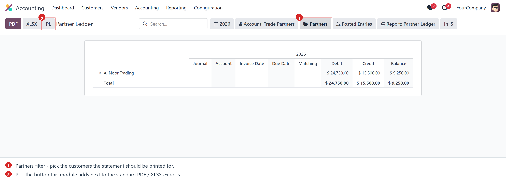
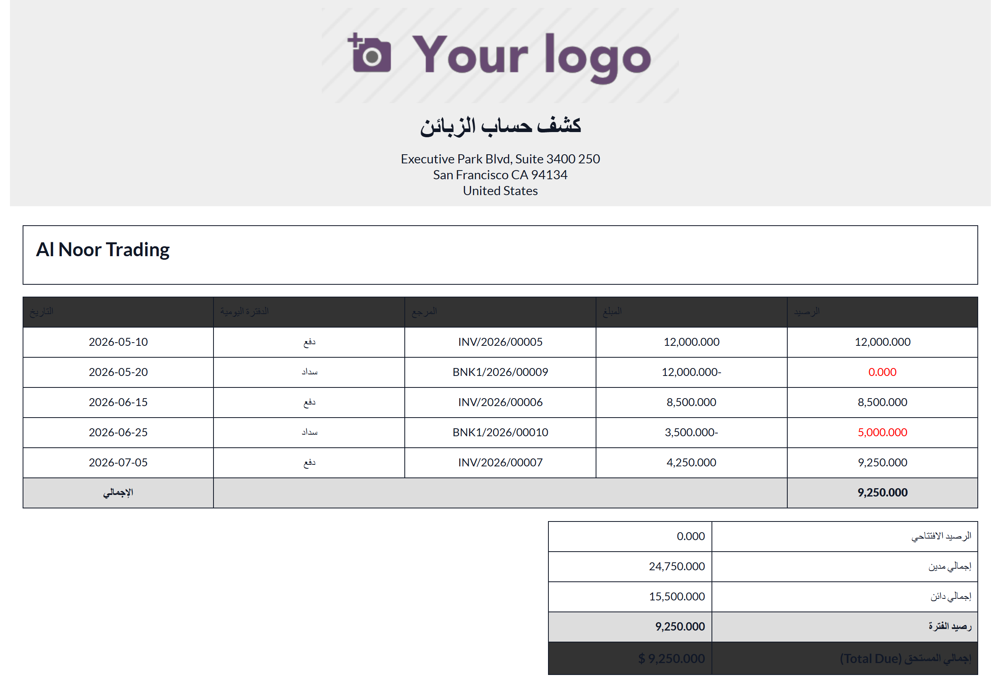
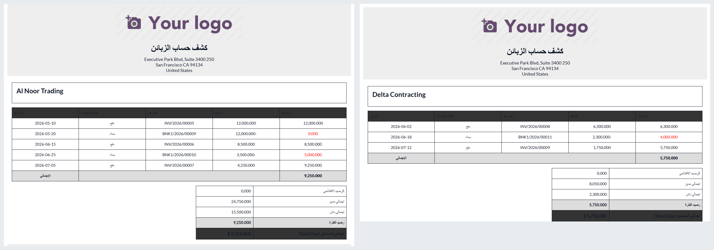
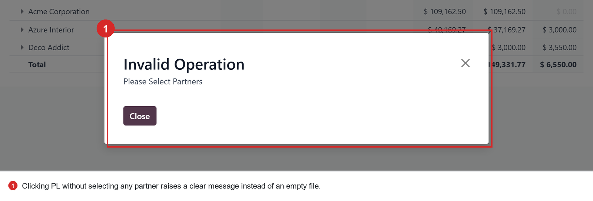

Prints a simplified, right-to-left Arabic customer account statement (كشف حساب الزبائن) straight from the standard Partner Ledger report — closing with the customer's Total Due.
Odoo's Partner Ledger is an audit report: it shows journal, account, invoice date, due date, matching number, debit, credit and balance for every move line. That is far more detail than a customer wants to see on the statement you email them.
This module adds a PL button next to the standard PDF / XLSX exports of the Partner Ledger. It prints the same figures as a clean five-column Arabic statement — one A4 landscape page per selected customer — carrying in each partner's opening balance from before the reporting period so the running balance is complete, and closing with a summary box that answers the one question the customer actually asks: how much do I still owe?
Every statement ends with a five-line summary, so the page stands on its own without the reader having to add anything up:
The first four lines describe the printed period — what the customer owed when it started, what was charged, what was settled, and where the balance stands at the end.
Total Due is a different number on purpose: it is the outstanding amount of the customer's receivable and payable entries, taken from the residual left on each one, so an invoice that has since been paid contributes nothing even when it falls inside the printed period, and an invoice paid only in part contributes just the part that is left.
| الرصيد الافتتاحي | 0.000 |
| إجمالي مدين | 24,750.000 |
| إجمالي دائن | 15,500.000 |
| رصيد الفترة | 9,250.000 |
| إجمالي المستحق (Total Due) | 9,250.000 $ |
The button sits with the standard exports. The report itself is untouched — it still filters, unfolds and drills down exactly as before.

The same customer as above: the period totals and the closing balance match the standard Partner Ledger line for line, so the simplified layout never changes the numbers. Here the middle invoice was only partly settled, which is exactly what the Total Due line reports.

Select as many partners as you need — each statement starts on a fresh page and carries its own opening balance, period totals and Total Due.

The statement is always partner-specific, so the module stops you before it produces an empty document.

| Where | What it does |
|---|---|
account.report_init_options_buttons |
Appends the PL button on reports that expose the Partners filter (Partner Ledger, Aged Receivable / Payable), and drops the standard Save export wizard. |
account.report_get_aml_values |
Asks the standard Partner Ledger handler for the move lines per partner — both directly linked lines and lines reached through partial reconciliations — then dates each line by invoice_date with a fallback to date and re-sorts on it. |
account.reportcustom_pl_pdf |
The button action. Validates that partners are selected and returns the report action carrying the collected lines and the period. |
res.partnerget_partner_initial_bal get_partner_total_due |
The opening balance, from posted receivable / payable lines dated before the period; and the Total Due, from the amount_residual left on those lines whatever their date. |
customer_partner_ledger. |
Stamps the running balance on each line, builds the summary box figures, and renders the QWeb template in its A4 landscape paper format. |
account_reports installed (Accounting / Enterprise).